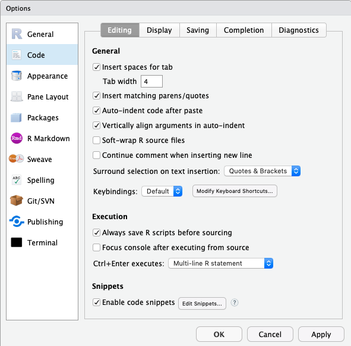
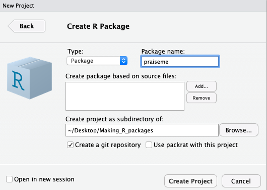
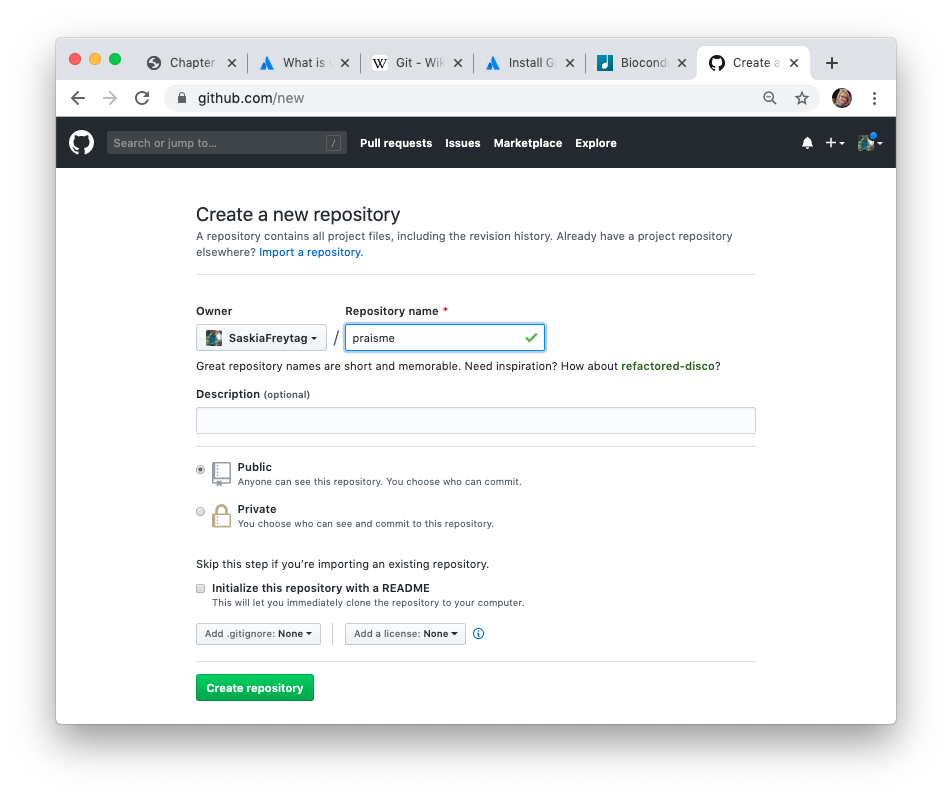
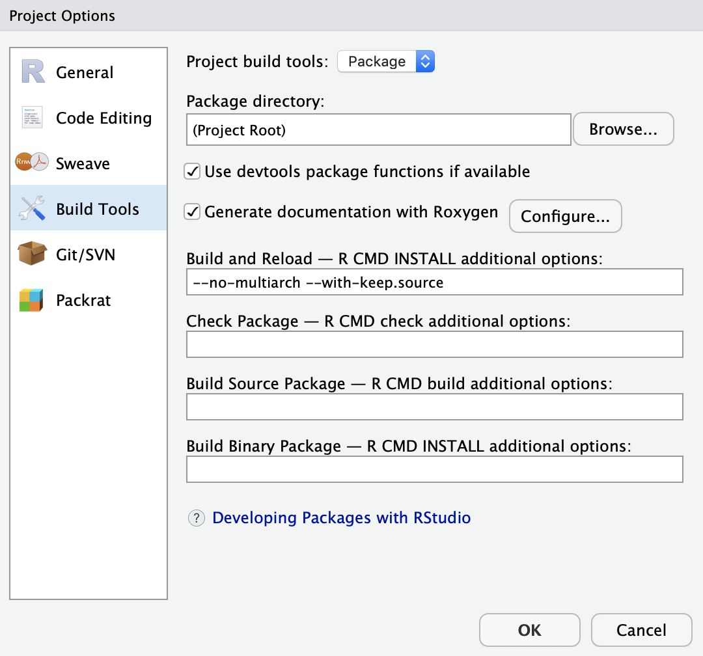
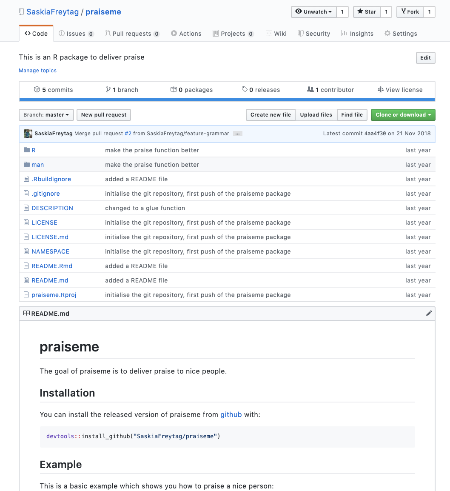

Workshop: Building a Bioconductor Package
Saskia Freytag & Peter Hickey
Last modified: November 20, 2019; Compiled: October 13, 2020
Source:vignettes/workshop.Rmd
workshop.RmdDisclaimer: Most of this material is shamelessly copied or adapted from the Bioconductor How-to-Guide and Hadley Wickham’s book on R packages. Other sources are mentioned in the text.
What, why, who, when and how
What is a Bioconductor package 📦?
A Bioconductor package is an R package 📦 that provides tools 🔨 for the analysis and comprehension of high-throughput genomic data and is available on the Bioconductor repository. Like any R package 📦 , Bioconductor package bundle together code (in functions), data, documentation and tests in order to share these with others. Broadly speaking in Bioconductor, there are packages 📦 are of three main types:
- Annotation: Data-base like packages 📦 that provide information linking identifiers to other information
- Experiment data: Provide data sets that are used to illustrate particular analyses.
- Software: Provide implementation of algorithms, access to resources or visualizations.
- Workflow: Long-form vignettes that illustrate how to analyse a particular type of data, such as RNA-seq.
For the purposes of this workshop, we will only consider software packages.
Why make a Bioconductor package 📦?
Bioconductor packages 📦 provide a simple way to distribute R code and documentation related to analysis and comprehension of high throughput genomic data. Packages on Bioconductor 📦 are basically guaranteed to be installable, as they are regularly built, installed, and tested on multiple systems. They are also required to be high-quality, well maintained and thoroughly documented. By creating such a package and making it available via Bioconductor, you are contributing to open science. Open science is a movement that tries to ensure that all aspects of the scientific process, which includes software, are accessible. This ensures reproducible research and increases efficiency by reducing replication of work.
Besides these lofty reasons for making a Bioconductor package 📦, being the creator and maintainer of a Bioconductor package 📦 is good for your career. It increases the reach and significance of your work, as it allows other scientists 👨🔬 to make direct use of your research.
Who should make Bioconductor packages 📦?
Absolutely anyone with some R programming experience can make a Bioconductor package 📦.
When should I make a Bioconductor packages 📦?
You are probably ready to make a Bioconductor package 📦 when you have a set of cohesive functions that address one or multiple problems in the analyses or comprehension of high-throughput genomic data. It is important that your package 📦 does not merely present an alternative to existing solutions, but constitutes an advance. However, do not be discouraged if your idea is already implemented. In such cases consider approaching the author of the package that has implemented your work and offer to collaborate 👩💻 and help maintain their package.
Design principles for Bioconductor packages 📦
Reuse
There are 1,903 software packages on Bioconductor packages 📦 currently available. Many of these packages 📦 have implemented thoughtful data structures and built infrastructure around these. In particular, the Bioconductor Core Team have spent considerable resources designing and developing well-tested packages 📦 that are central to the Bioconductor project. It is vital that your package makes use of these data structures and infrastructures whenever possible. For example, high-throughput genomic data is commonly stored in the SummarizedExperiment object class. If your package makes use of such data, you should consider interoperating with the SummarizedExperiment package. Here is a list of core packages that you should try to incorporate if appropriate:
-
GenomicRangeswhen using genomic coordinates -
SummarizedExperimentwhen using rectangular feature x sample data -
rtracklayerwhen importing GTF, GFF, BED, BigWig, etc -
GenomicAlignmentswhen importing SAM/BAM files -
VariantAnnotationwhen importing VCF files -
Rsamtoolswhen importing SAM/BAM files -
Biostringswhen using DNA/RNA/AA sequences or importing FASTA files -
ShortReadwhen importing FASTQ files -
MSnbasewhen using mass spec data -
GSEABasewhen working with gene sets -
SingleCellExperimentwhen working with single cell data
Modularity
Packages 📦 in Bioconductor are meant to be modular. That means that you should try to break down your functions into smaller parts. This has multiple advantages:
- Shorter functions are easier to comprehend
- Functions can be used across multiple problems
- Users can check intermediate results and adjust analysis
In particular avoid copy pasting code. Instead just write a function and apply this function.
Note that the concepts of modularity and reuse are sometimes referred to as interoperability.
Making a Bioconductor package 📦
We will now get to the hands-on part of the workshop. For this you require RStudio, as it is a great place to get started because RStudio has already added tools 🔨 to make package 📦 creation and dissemination easier for end users.
For this workshop the following packages are required:
Always start with version control 🐱
Version control is particularly important for software development. This is because you will want to keep track of every change, so in case you accidentally break something you can go back in time and fix your errors. Essentially just think of version control as the “Track Changes” feature in Microsoft Word on steroids.
How to version control 🐱?
There are multiple ways to handle version control, we will default to Git. Git is a software that facilitates version control. It was designed particularly for coordinating work among software developers. Git-based projects are hosted on cloud-based services, such as GitHub, Bitbucket and GitLab. You can think of these as Google Drive, but much more organized. These allow you to store your projects, share your work with other people and even allow others to make changes.
Version control 🐱 with GitHub and RStudio is easy
Here we will work with Git Hub for the sake of specificity. In order for you to be able to work with Git Hub you will need to get the following:
- Get a GitHub account
- Install git on your local machine
- Connect your git to R Studio
Lucky for this tutorial you will only need to get a GitHub account and connect it to RStudio, because we will be working on AWS where git is already installed. If you were wondering how to install git, just follow this link.
To connect RStudio to your git, we will be using the usethis package:
use_git_config(user.name = "Jane Doe", user.email = "jane@example.org")
Simply replace “Jane Doe” with your GitHub username and enter your email instead of “jane@example.org”. Make sure to use the one that was used when you signed up to GitHub.
If you are feeling a bit overwhelmed with the whole version control 🐱 concept, don’t worry. There is Jenny Bryan and Jim Hester’s excellent book “Happy Git with R” which is available for free online.
Let’s get started
Now we are almost ready to start. Note that in this workshop we will each write a little package 📦 that gives praise to the user. This does obviously not constitute a Bioconductor tool, however we want you to focus on the package developing part instead of thinking of high-throughput genomic applications.
Set some layout parameters
However before we initialize our package 📦 we want to make some layout configurations to our RStudio session, so your code will be formatted the way that Bioconductor prefers it. Just think of this step as setting the layout parameters on a Word document.
- Set up the tab to be 4 spaces. You can find this in the ‘Tools’ menu if you select the ‘Global Options…’ and then look at the ‘Code’ panel under the ‘Editing’ tab.

- Set the column width marker to 80 columns. You can find this in the ‘Tools’ menu if you select the ‘Global Options…’ and then look at the ‘Code’ panel under the ‘Display’ tab. Make sure that you click the ‘show margin’ option and that it is set to 80 columns. This will help you see if your lines are too long.

Intialize your package 📦
To make your first package 📦 with RStudio, go to the ‘File’ menu and choose ‘New Project’. From here you probably want to choose ‘New Directory’ and then you definitely want to choose ‘R Package’ to set up a new R package 📦. This will take you to the final step to get started which will just ask you what you want to call your new package 📦 and where to put it. It is worth taking a moment to choose a name that you think you will like and to put the package 📦 in a location where you are comfortable working. These things can be easily changed later but it’s still best to get them correct right now. For the purposes of this tutorial we will create a package 📦 called ‘praiseme’ and store it in default location. Finally, check the box at the bottom that says ‘Create a git repository’.

If you look at the screen now you will see several files listed in the files tab. These are files that are needed to make a package (and which R Studio conveniently creates for you). A couple of these files are ‘extras’ that are put there by RStudio to help it manage your package building (‘.Rbuildignore’, ‘Read-and-delete-me’ and ‘praiseme.Rproj’) You can just ignore these files, as
they are not part of ‘required’ R package anatomy.
Describe your package
Now we are ready to start entering some information into your package 📦. We will start with the DESCRIPTION file. This is file has a LOT of roles in an R package. And technically it is a ‘.dcf’ file. It does its job by detailing a series of fields to tell R about what is in a package and how to use that information. The one that was auto generated for you should already look like this:
Package: praiseme
Type: Package
Title: What the Package Does (Title Case)
Version: 0.1.0
Author: Who wrote it
Maintainer: The package maintainer <yourself@somewhere.net>
Description: More about what it does (maybe more than one line)
Use four spaces when indenting paragraphs within the Description.
License: What license is it under?
Encoding: UTF-8
LazyData: trueWhich is a good start really for almost any DESCRIPTION file. You will see that for some fields they are giving you hints about what to put there and for other fields they have just filled them in already. You will need to fill in at least that many fields (and a few more) in order to make a packag 📦e for Bioconductor. Lets start by describing what goes into the fields that are present already in our example, and then I will talk a bit about adding some of the fields that are not.
- Package - This string is just the official package name.
- Type - This will basically always be ‘Package’. If you are wondering why this field even exists the short answer is: history. The long answer is already explained in the Writing R extensions manual
- Title - This is a slightly longer and more descriptive name for your package 📦.
- Version - This is not filled in correctly for a Bioconductor package 📦 in the default example above. Bioconductor packages 📦 need a three part version number X.Y.Z. The ‘X’ value is the major version number (normally 0 until there has been a release) The ‘Y’ value is normally bumped automatically for you with each release such that the development branch is an odd number while the release is an even number, so these usually skip a number each release. And the ‘Z’ number is the minor release number which can be anything as long as it’s bigger than the last number you used…
- Author - List of people (preferably with email addresses who wrote the original package 📦)
- Maintainer - Who should people contact if they have a problem with this package? You must have someones name and email address here. You must make sure this is up to date and accurate.
- Description - This is where you can write a nice verbose description of what your package 📦 is about. Think of it like the abstract for a paper.
- License - Here you need to fill in the official license. Normally you will want to just use one of the ‘official’ licenses. Which basically means choosing from one of the following strings for this field: ‘GPL-2’, ‘GPL-3’, ‘LGPL-2’, ‘LGPL-2.1’, ‘LGPL-3’, ‘AGPL-3’, ‘Artistic-2.0’, ‘BSD_2_clause’, ‘BSD_3_clause’, ‘MIT’.
Also note that two more field were created Encoding and LazyData. The LazyData field is best deleted as they are not required.
Here are some other fields that can be in the DESCRIPTION file. We will think about these during the remainder of the workshop, but here is a brief overview:
- Depends - This field is for listing hard dependencies. If you have another package 📦 and your package 📦 is really meant to be used along with that package 📦 then you might want to list it here. Doing so will basically always load that other package before loading yours thus guaranteeing that all the contents exported by both packages 📦 are available to end users.
- Imports - This is what you should use when you want to access the contents of another package from within the code of your own package. If that is your intention, then you should list those packages here. This field is normally used in conjunction with import statements inside the NAMESPACE file that will spell out which functions and objects need to be available for your package.
- Suggests - This is for dependencies that are not needed in order to load and use your package 📦. If you have a function somewhere that is rarely used and that needs some specific package 📦 resource then Suggests is a good option. Suggests is normally used along with
require()to ensure that the package 📦 in question is loaded when and where it is needed. - BiocViews - These are unique to Bioconductor and they describe each package 📦 using a controlled vocabulary. You can see an example of how they are used and also browse existing ones by clicking here. While you are browsing, be sure to check the box that says ‘Developers: check this box to toggle the visibility of childless biocViews.’ That way you will be able to see the full ontology. You can also make use of the
recommendBiocViews(pkgdir)function from thebiocViewspackage to suggest potential views for your package.
Now that we have discussed the DESCRIPTION file lets fill ours out so that it can actually work for our test package 📦:
Package: praiseme
Type: Package
Title: A Package to Desseminate Praise
Version: 0.1.0
Author: Jane Doe <janedoe@email.org>
Maintainer: Jane Doe <janedoe@email.org>
Description: This package praises the user with simple functions.
License: MIT
Encoding: UTF-8Back to version control 🐱
So we have made some first strides towards a package. Usually we would save our progress at this point. This is still a good idea, but we will also have to document our changes in git. To do this we will use git commit, which takes a multi-file snapshot of the entire project. Have you ever versioned a file by adding your initials or the date? That is effectively a commit, albeit only for a single file: it is a version that is significant to you and that you might want to inspect or revert to later.

To commit the changes in the git pane select all files that you want to save. Then click ‘Commit’. This will open a new window where you will be prompted to write a short message about your changes. Ideally, this conveys the motivation for the change. When you revisit a project after a break or need to digest recent changes made by a colleague, looking at the history, by reading commit messages and skimming through diffs, is an extremely efficient way to get up to speed. After writing this short message press ‘Commit’.
A little bit more version control 🐱 pain
Now we also want to propagate the changes we have just committed to an online GitHub repository. For this, we need to tell R about where on GitHub we would like to remotely store the package. To this end, you will first need to create a new GitHub repository.
So, go to https://github.com and make sure you are logged in.
Click green “New repository” button. Or, if you are on your own profile page, click on “Repositories”, then click the green “New” button. This will take you to a new page, which will allow you to create a repository, i.e. the place where your package 📦 will be remotely stored. Enter ‘praiseme’ in the repository name and initialize by clicking on the big green button “Create repository”.

Finally, copy the URL the ‘Quick setup’ box.

Now back to RStudio where you will need to connect the package 📦 to the newly created repository. In your RStudio click on the Git pane in the right corner. There, click on the “two purple boxes and a white square”. Click “Add remote”. Paste the URL here and set the ‘Remote Name’ to “origin”. Now, click “Add”.

We should be back in the “New Branch” dialog. Enter “master” as the branch name and make sure “Sync branch with remote” is checked. Click “Create” (yes, even though the branch already exists). In the next dialog, choose “overwrite”.
Your first function
Now let’s add some content to your R package 📦. We refer to functions as the content of an R package 📦. Functions live in the R/ folder, as R Scripts. You will see that there is already a hello.R R script in there. This has some information regarding package 📦 development. It is best deleted once you have taken in the information.
Writing functions
Now let’s write our first function called praiseme. Before I explain what this function is meant to do, you need to open a new R Script file. For this navigate to ‘File’ and then choose ‘New File’ and then click on the option ‘R Script’. This will open a new script in your editor pane.
Before we start to write our function, let’s make sure everyone understands the purpose of a function and how to write them. Functions are a fundamental building block of R. Functions allow you to automate tasks in a powerful way. All functions share the following syntax:
function_name <- function(arg_1, arg_2, ...) { evaluation(arg_1, arg_2) }
In this case function_name is the actual name of the function, by which it can be called. The function takes several arguments, arg_1 and arg_2, which are placeholders and when the function is called will be passed values. Note that these are optional. The function body contains a collection of statements that defines what the function does. The function then returns the last expression in the function, also referred to as the return value. So let’s look at a quick example:
sum_plus_1 <- function(x, y){ x + y + 1 } sum_plus_1(1, 4)
## [1] 6We have created a function that sums two numeric values and adds 1. When we apply the function to 1 and 4, it returns as expected 6.
Writing good functions requires practice, but there are some fundamental rules that can guide you:
- give the functiona an evocative name that makes code easier to understand
- give your arguments evocative names that make them easier to understand
- use consistent coding style
- break your functions into smaller functions
- comment your code
If you want to know about Bioconductor specific code style check out this link. There is also styler an excellent R package that restyles your code automatically. If you just want your code style to be automatically assessed you may find the R package lintr more useful
So now it is time for you to write a function called praiseme. This function takes at least one argument, but more if you please. The function then incorporates the argument when returning praise to the user. Write your function, below you can find an example for when you are stuck. Try to write the function without looking at the example function first.
praiseme <- function(your_name) { paste0(your_name, ", you are the absolute best!") }
Add documentation 🖊
Documentation 🖊 is one of the most important aspects of a good package 📦. Without it, users won’t know how to use your package 📦. Documentation 🖊 is also useful for future-you (so you remember what your functions were supposed to do), and for developers extending your package 📦. Documentation 🖊 in an R package 📦 can be accessed by ? or help(). It lives in the folder \man, where you can find .Rd files, which contain documentation 🖊. These can be created by hand, but that is generally not advisable. Here we will learn how to create this type of documentation 🖊 using roxygen2. This is a language that makes the creation of these files automatic and at the same time can also manage your NAMESPACE and the Collate field in your DESCRIPTION.
Writing documentation 🖊
There is a super simple way to start writing documentation 🖊. Put the cursor inside the function that you want to document and then navigate to ‘Code’ and click ‘Insert Roxygen Skeleton’. This will automatically add some lines to your praiseme function.
#' Title #' #' @param your_name #' #' @return #' @export #' #' @examples praiseme <- function(your_name){ paste0(your_name, ", you are the best!") }
You will notice that there are new lines that start with #'. These are the roxygen comments and they are broken up in into blocks, which are mostly tagged using @. This is not true for the first couple of lines though:
- The first sentence becomes the title of the documentation 🖊. That’s what you see when you look at
help(praiseme)and is shown at the top of each help file. It should fit on one line, be written in sentence case, but not end in a full stop. - The second paragraph is the description: this comes first in the documentation and should briefly describe what the function does.
- The third and subsequent paragraphs go into the details: this is a (often long) section that is shown after the argument description and should go into detail about how the function works.
All objects must have a title and description. Details are optional. As well as these introduction blocks, most functions have three tags: @param, @examples and @return. These are automatically generated by the skeleton. They refer to the following:
-
@paramname description describes the function’s inputs or parameters. The description should provide a succinct summary of the type of the parameter (e.g., string, numeric vector) and, if not obvious from the name, what the parameter does. The description should start with a capital letter and end with a full stop. It can span multiple lines (or even paragraphs) if necessary. All parameters must be documented. -
@examplesprovides executable R code showing how to use the function in practice. This is a very important part of the documentation because many people look at the examples first. Example code must work without errors. -
@returndescription describes the output from the function. This is not always necessary, but is a good idea if your function returns different types of output depending on the input, or if you’re returning an S3 or S4 object.
Now let’s fill out the documentation 🖊 for you praiseme function. Again try doing this on your own before looking at the example code.
#' Praise the user #' #' \code{praiseme} returns praise incorporating a user-specified string. #' #' @param your_name A string specifying the name of the praisee. #' #' @return A string with the praise. #' @export #' #' @examples #' praiseme("Luke") praiseme <- function(your_name){ paste0(your_name, ", you are the best!") }
The last thing we need to discuss is the @export statement in the roxygen comments. This statement makes sure that the function you have just written will be available to the user. Roxygen2 will automatically create the correct line in the NAMESPACE to indicate that this function should be exported. To understand the significance of the NAMESPACE see the section below.
Note that these are the absolute basics regarding documenting and NAMESPACE. For more information, we strongly advice you to check out this link and this link.
Remember to commit your changes 🐱
When you are happy with your documentation 🖊 remember to commit your changes. Add a short message regarding the changes you have made.
Process your documentation 🖊
In order to actually generate the NAMESPACE and the manual pages, you will need to run a generation step. However, before this is possible we need to delete the current NAMESPACE file. So tick the file in your ‘Files’ pane in the bottom left corner and then click ‘Delete’. We will now run the generation of the NAMESPACE and the manual pages. For this navigate to your Build pane in the right corner. There expand ‘More’ and click on ‘Configure Build Tools …’. This will open a new window in which you will need to check the box ‘Generate Documentation with Roxygen’.

When you now expand the ‘More’ button again, you will find a ‘Document’ option. Click this option. This will generate a file in your \man folder. Have a quick look at it. You may recognize that this is actually written in latex.
The NAMESPACE
The NAMESPACE file is used to control which objects are exported by a package (to end users) as well as which ones are available to it (as imported from other packages). Unlike the DESCRIPTION file the NAMESPACE file is not a ‘.dcf’ file. It is actually meant to contain R code. The good news is that the NAMESPACE package is created automatically for you when you are using roxygen2 to document your code. Since it is an advanced topic, we will not cover it here beyond teaching you how to automatically generate it with roxygen2. If you are interested, follow this link.
Build 🚧, install, test your package 📦
We are now finished with the package. In actuality, this would probably mark the beginning of your package writing and you would simply add more functions, by using the same strategy:
- Write function
- Document function
- Create documentation and NAMESPACE
Finally (or intermittently) you will want to see whether your package 📦 works. In this case, we mean whether it builds 🚧 and can be installed.
Build 🚧 and install your package 📦
Let’s first see whether our package build. For this navigate to the ‘Build’ pane in the right hand corner and click on ‘More’, where you will find ‘Build Source Package’. This will run devtools::build() on your directory and create a tar file containing all your package 📦 contents in a platform-agnostic, transportation-friendly manner.
Next you will want to see if you can actually work with the package 📦, i.e. can it be installed and do the functions run. For this click on the ‘Install and Restart’ button in the ‘Build’ pane. This will restart your Rsession and install the package. You can now test and see whether your functions worked.
Test your package 📦
Now play around with your package 📦. In particular, see whether your documentation works. For this use the command ?praiseme.
Once your package 📦 satisfies your first thorough tests, you can formally test it. There are several ways to test a package. The easiest way is to navigate to the ‘Build’ pane again and there click ‘Check’. This will run R CMD check on your package which will build 🚧 and install your package 📦 again, as well as running all the examples.
If you look in our package 📦 guidelines you will see that not only must a package 📦 pass R CMD build and R CMD check without ERRORs or WARNINGs, but it must also pass a bunch of other requirements intended to make sure that your code is well documented and that it will integrate well into the rest of the project. You can also test your own package 📦 for BiocCheck compliance like this:
If you have followed the instructions up to this point, then calling the function above will produce an list object as output to tell you which things are needed for your package 📦 to be compliant with the Bioconductor package 📦 guidelines. The BiocCheck output is broken into three distinct categories:
- Requirements are things that we are confident will always be necessary. If you have failed some of these, you should aim to fix it right away.
- Recommendations are things that are usually really important to change, but their interpretation can sometimes depend on context. If you are failing some of these you should try to fix it if at all possible.
- Considerations are usually a good idea. But they might or might not apply in your particular case.
Finally another good idea is to run the following code on your package 📦:
library(goodpractice) # This assume your working directory is the package directory. g <- gp(".") g
This utilises the goodpractice package 📦 which provides opiniated advice about good practices when building R packages 📦 tailored to your package 📦. Advice includes functions and syntax to avoid, package structure, code complexity, code formatting, and more.
Also needed (but not covered)
There are some further parts of a package 📦 which are important and required for Bioconductor, but will not be discussed here. We will briefly introduce these and then refer you to links to learn more about these.
Vignettes 📖
A vignette is a long-form guide to your package 📦. Function documentation is great if you know the name of the function you need, but it’s useless otherwise. A vignette is like a book chapter or an academic paper: it can describe the problem that your package 📦 is designed to solve, and then show the reader how to solve it. A vignette should divide functions into useful categories, and demonstrate how to coordinate multiple functions to solve problems. For more on vignette please go to this link.
Unit tests ✅
These are automated tests that are a bit like the tests you perform when you install the package 📦 for the first time. However, instead of you doing these the computer takes care of them. This requires you to tell the computer how to perform these tests. This is what you do when writing unit tests, which live in the folder \tests. You will need the R package 📦 testthat for this purpose. If you wish to know more, follow this link.
NEWS 📰
The NEWS.md is aimed at existing users: it should list all the API changes in each release. There are a number of formats you can use for package news, but I recommend NEWS.md. It’s well supported by GitHub, permitted by CRAN, and is easy to re-purpose for other formats. For more on the NEWS file, go to this link.
Github actions 🐱
Github actions automatically allow you to check your package every time you commit a change. This will allow you to catch errors quickly. However, they can be tricky to set up. Good that there is a package that will do the hard work for you, simply add Github actions with the help of the biocthis 📦. Check out its function use_bioc_github_action() for more information.
End by disseminating
Alright now you are almost ready to disseminate your first package 📦.
Add a Readme 📄
Before sharing your package 📦 with the world you want to create a document that tells new users what the can expect from your package 📦. This is the purpose of the README.md file, which will be displayed on your GitHub page. The easiest way to get started is to use usethis::use_readme_rmd(). This creates a template README.Rmd and adds it to .Rbuildignore. The template looks like:
---
output: github_document
---
<!-- README.md is generated from README.Rmd. Please edit that file -->
```{r, echo = FALSE}
knitr::opts_chunk$set(
collapse = TRUE,
comment = "#>",
fig.path = "README-"
)
```Now create your own small README file that explains the purpose of your package 📦 and adds an example. Remember to modify the README.Rmd. You’ll then need to re-knit README.Rmd. For this simply click on the ‘Knit’ button at the top of the editor.
If you are not familiar with R Markdown check out this essential tutorial and the Cheatsheet, which can be found in the tool bar at the top of RStudio. There click on ‘Help’ and then ‘Cheatsheets’, where you find “R Markdown Cheat Sheet”.
In case you are struggling with your README.Rmd here is an example:
---
output: github_document
---
<!-- README.md is generated from README.Rmd. Please edit that file -->
``{r setup, include = FALSE}
knitr::opts_chunk$set(
collapse = TRUE,
comment = "#>",
fig.path = "man/figures/README-",
out.width = "100%"
)
```
# praiseme
The goal of praiseme is to deliver praise to nice people.
## Installation
You can install the released version of praiseme from
[github](https://github.com/SaskiaFreytag/praiseme) with:
```
devtools::install_github("SaskiaFreytag/praiseme")
```
## Example
This is a basic example which shows you how to praise a nice person:
```
library(praiseme)
praise("Saskia")
```Pushing your changes 🐱
This time we will push the entire project and the history of the changes you have made to GitHub, where the package 📦 will then be available for download by other people. For this navigate to the ‘Git’ pane in the right hand corner. There click on the ‘push’ button. Afterwards go to GitHub and find your praiseme repository. You should see something like this:

Note that other people can now simply install your package 📦 by using devtools::install_github("your_name/praiseme"). If you want to try this out go ahead and install your package 📦 from GitHub.
The Bioconductor submission process
Your submission
The Bioconductor submission process works through GitHub. So by developing our 📦 with version control, we have already passed the first hurdle. When your package 📦 passes the basic requirements and tests, you are ready to submit. Submission is actually pretty easy. Submit by opening a new issue in the Bioconductor Contributions repository, following the guidelines of the README.md file.
After submission
A new package 📦 is initially labeled as ‘1. awaiting moderation’. A Bioconductor team member will take a very brief look at your package, to ensure that it is intended for Bioconductor. Appropriate packages will be re-labelled ‘2. review in progress’.
The package 📦 will be submitted to the Bioconductor build system. The system will check out your package 📦 from GitHub. It will then run R CMD build to create a ‘tarball’ of your source code, vignettes, and man pages. It will run R CMD check on the tarball, to ensure that the package 📦 conforms to standard R programming best practices. Bioconductor has chosen to utilize a custom R CMD check environment. Finally, the build system will run R CMD BiocCheck to ensure that the package conforms to Bioconductor BiocCheck standards. The system will perform these steps using the ‘devel’ version of Bioconductor, on three platforms (Linux, Mac OS X, and Windows). After these steps are complete, a link to a build report will be appended to the new package issue. Avoid surprises by running these checks on your own computer, under the ‘devel’ version of Bioconductor, before submitting your package 📦.
If the build report indicates problems, modify your package 📦 and commit changes to the default branch of your GitHub repository. If there are problems that you do not understand, seek help on the bioc-devel mailing list.
To trigger a new build, include a version bump in your commit, e.g., from Version: 0.99.0 to Version: 0.99.1.
Once your package 📦 builds 🚧 and checks without errors or (avoidable) warnings, a Bioconductor team member will provide a technical review of your package. Other Bioconductor developers and users with domain expertise are encouraged to provide additional community commentary. Reviewers will add comments to the issue you created.
Respond to the issues raised by the reviewers. You must respond to the primary reviewer, and are strongly encouraged to consider community commentary. Typically your response will involve code modifications; commit these to the default branch of your GitHub repository to trigger subsequent builds. When you have addressed all concerns, add a comment to the issue created in step 2 to explain your response.
The reviewer will assess your responses, perhaps suggesting further modifications or clarification. The reviewer will then accept your package 📦 for inclusion in Bioconductor, or decline it. The label ‘2. review in progress’ will be replaced by ‘3a. accepted’ or ‘3b. declined’.
If your package 📦 is accepted, it will be added to Bioconductor’s Git source control repository and to the nightly ‘devel’ builds.
Release cycle
There are two releases each year, around April and October. The release schedule will indicate the timetables and deadlines for each release. A release cycle typically produces two versions of packages, ‘devel’ and ‘release’. It is important to be familiar with these branch concepts. Once your package 📦 has been accepted, it will initially be in the ‘devel’ branch. The current devel branch becomes the next release. Most users are expected to use the release branch, so they will not immediately have access to your package until the next release. Bug fixes can be fixed in both branches, while new features should only be added to the ‘devel’ branch. You can check the release cycle here.
What we wish we would have known?
Be mindful of dependencies ✌️
Any other package you make use of has to be available on either CRAN or Bioconductor. It is vital that you make use of existing and well-tested functionality from other packages 📦, in particular other Bioconductor packages. However, be aware that with every dependency you include in your package 📦, your package maintenance increases. Any changes in your dependencies could potentially play havoc with your package 📦, requiring you to make cumbersome changes.
Be mindful of your package size 🏋
GitHub tracks all of your files and keeps a record, even when they are deleted. This means that once you include a file in your package, it contributes to the package size for all time, albeit in a compressed manner. Since Bioconductor software packages are limited to 5MB, you want to avoid adding large files and tracking them even in the initial stages of your package development. If you absolutely have to include such files in the initial stages of development, remember to include them in your .gitignore file.
Don’t be afraid of S4 classes 🏅
You may have heard that Bioconductor favours the more complicated system of S4 classes to the more widely used S3 classes, that you may be familiar with. In reality this preference for S4 classes will only impact you when you are set on implementing new representations. There are several good guides to S4 classes, if you have yo use them. Check out this link and this link.
For when you are stuck 😱
Further resources
There are many excellent tutorials, books and blogs on the topic of writing R packages here are our favourites:
- R packages, Hadley Wickham
- How to develop a good R packages (for open science), Maelle Salmon
- rOpenSci Packages: Development, Maintenance and Peer Review, rOpenSci software review editorial team
- R package primer, Karl Broman
Specifically to creating Bioconductor packages, we suggest the following links:
- R package workshop
- Building packages for Bioconductor
- Package Guidelines
- Package Submission
- Make a Package
- Using Bioconductor with RStudio Package Manager
Also check out the amazing biocthis package which will guide you through the development of a package when this tutorial fails.